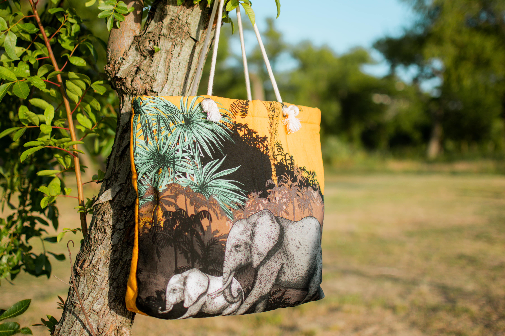
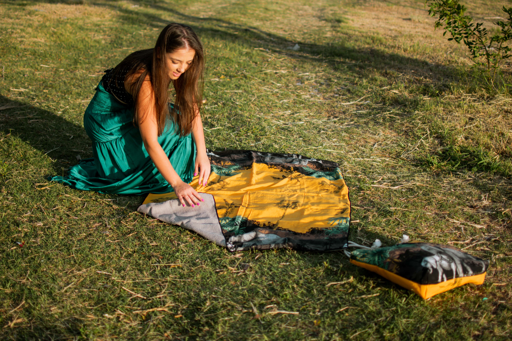
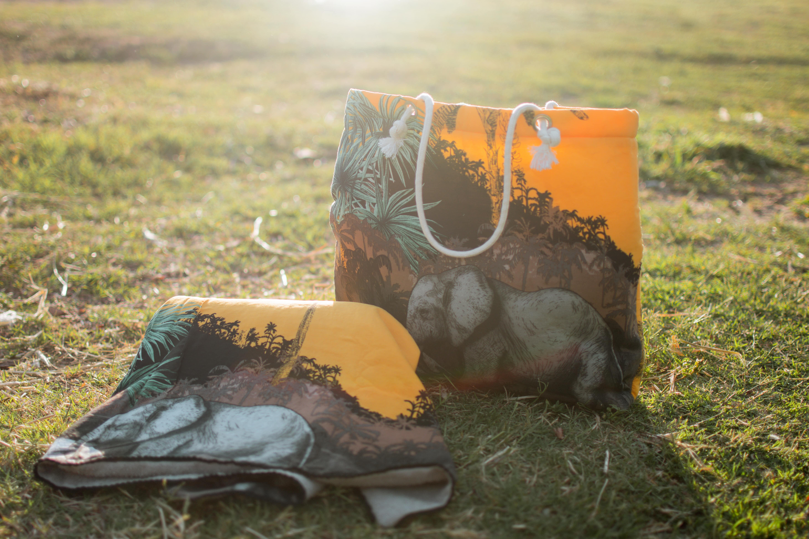

Canga
Aquele item que antes era usado para se estender na areia, no parque ou à beira da piscina, agora também pode ser usado para secar o corpo! O pano colorido levinho ganhou uma camada atoalhada e um mini travesseiro para acompanhar e deixar o banho de sol mais confortável!



Kimono
Tem peça mais versátil que um kimono? A resposta é não! Porque ele incrementa qualquer visual, seja look dia-a-dia, combinando com uma calça jeans e t-shirts, seja looks na praia com shorts ou biquíni e até mesmo produções para à noite com um look mais arrudinho composto por um belo salto!
Saia Pareô
Na lista de peças que chegaram pra ficar, com certeza tem a saia pareô, e ela está lá no topo! Essa saia pode transitar entre areia e o asfalto tranquilamente e fazer a mulher se sentir ainda mais poderosa.